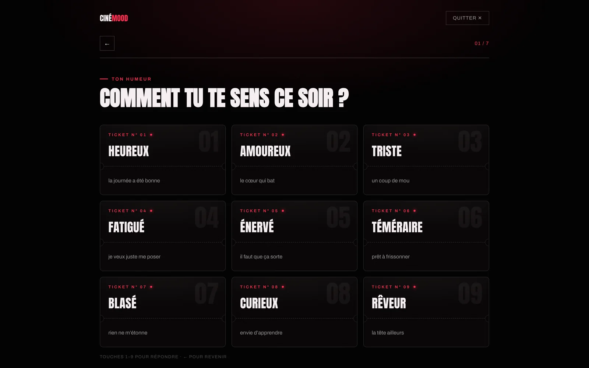
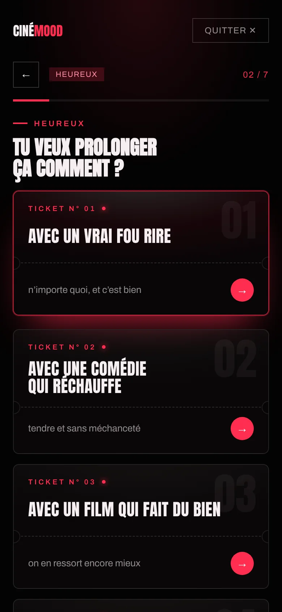

Étude de cas · Web app · 2026
CinéMood
Un site qui choisit votre film à partir de votre humeur. Sept questions, une minute, cinq films expliqués.
- Rôle
- Concept, identité, UX, rédaction, intégration
- Support
- Site responsive, ordinateur et mobile, français et anglais
- Année
- 2026
- En ligne
- cinem00d.com ↗

Le point de départ
« Tu passes trente minutes à chercher quoi regarder. On part de ton moment et on répond en une minute. »
Les plateformes rangent les films par genre. Le soir, la vraie question est ailleurs : de quoi ai-je envie maintenant, avec les personnes qui sont là, et avec le temps que j’ai ?
CinéMood part de cette question. Au lieu de faire défiler des rangées d’affiches, on dit comment on se sent et le site répond par une sélection courte et argumentée. Le positionnement tient en une phrase, reprise sur la page d’accueil : un conseiller cinéma, pas un catalogue de plus.
Le parcours en sept questions
Les questions s’enchaînent dans cet ordre. La deuxième dépend de la première, les cinq suivantes affinent le contexte.
- Ton humeurNeuf états : heureux, amoureux, triste, fatigué, énervé, téméraire, blasé, curieux, rêveur.
- Ton envieTrois ou quatre propositions propres à l’humeur choisie. « Heureux » propose un vrai fou rire, une comédie qui réchauffe, un film qui fait du bien ou une aventure.
- Ton seuilÊtre secoué pas du tout, un peu, beaucoup ou à fond.
- Ton publicSeul, à deux, entre amis, en famille, avec des enfants, ou avec quelqu’un qui regarde peu de films.
- Ton tempsMoins de 1 h 45, une soirée classique, toute la soirée, ou peu importe.
- Ton époque2010 et après, années 80 à 2000, avant 1980, ou peu importe.
- Connu ou découverteUn film sûr, une pépite moins vue mais bien notée, ou la surprise.
On répond au doigt ou au clavier (touches 1 à 9, flèche gauche pour revenir). Un compteur « 02 / 7 » et une barre de progression indiquent où l’on en est, et les réponses précédentes restent visibles sous forme d’étiquettes.


Le moteur
Les films viennent du catalogue de The Movie Database (TMDB), plus de 900 000 titres interrogés en direct. Aucune liste n’est choisie à la main.
Chaque réponse devient un paramètre de recherche explicite : genres demandés, genres exclus (pas d’horreur en famille, rien de dur avec des enfants), durée, années, nombre de votes minimum. Chaque candidat est ensuite vérifié deux fois, par ses genres puis par ses mots-clés : ce qui ne colle pas à l’envie est écarté, même s’il est populaire.
Un score sur sept critères
Les films restants sont classés par un score. Voici le poids de départ de chaque critère ; il augmente pour les critères sur lesquels l’utilisateur a répondu explicitement, puis l’ensemble est ramené à 100 %.
- Genre26 %
- Intensité15 %
- Qualité14 %
- Contexte12 %
- Notoriété11 %
- Époque9 %
- Ton8 %
Le calcul est déterministe : les mêmes réponses donnent toujours le même résultat. Le site affiche un meilleur choix et quatre alternatives, chacune avec son score et une phrase « Pourquoi lui ». Si rien ne tente, une relance propose de nouveaux films sans répéter les précédents, et un bouton « Pas lui » retire un film de la sélection.
Le mode Duo
Choisir un film à deux est souvent plus long que seul. En mode Duo, la première personne répond, puis l’écran affiche « Passe l’écran à l’autre personne ». La seconde répond sans voir les réponses de la première.
Le moteur ne garde que les films qui conviennent aux deux profils, et chaque film est noté sur le plus faible de ses deux scores. Un film parfait pour l’un et médiocre pour l’autre ne passe donc jamais devant un film correct pour les deux.
L’identité

Le logo reprend les lettres d’une façade de cinéma : CINÉ en blanc, MOOD en rouge, dans une linéale étroite et très grasse. Il fonctionne en une seule ligne, du favicon à l’image de partage.
- L’enseigne néon. Sur l’accueil, le mot CINÉMA grésille et tombe en panne par moments, et le É est à moitié grillé. Les cycles de clignotement ont des durées premières entre elles, donc le motif ne se répète jamais à l’identique.
- Les tickets. Les réponses du questionnaire sont des tickets numérotés, avec la ligne de découpe en pointillés.
- Le mur d’affiches. Derrière le titre, des colonnes d’affiches défilent en sens alternés. L’animation s’arrête si l’appareil demande moins de mouvement.
- La voix. Le site tutoie et parle comme un ami cinéphile : « Heureux, triste, amoureux, crevé ? Dis-nous comment tu te sens. »
- Titres
- Anton
- Texte
- Archivo
- Palette
- Noir salle #070506
- Rouge néon #FF2D4F
- Blanc écran #F6EEF0
Sur mobile
Le parcours a été pensé pour le téléphone autant que pour l’ordinateur : les tickets passent en une colonne, les boutons restent à portée de pouce et chaque réponse fait avancer d’un écran.


Sous le capot
- HTML, CSS et JavaScript, avec un moteur de rendu basé sur React 18.
- La clé de l’API TMDB reste côté serveur : les requêtes passent par une fonction Cloudflare Pages qui sert de relais et limite les abus.
- Version anglaise : tout le texte se traduit à la volée et le catalogue passe en anglais (titres, résumés, bandes-annonces). La langue suit celle du navigateur.
- Fiche film : synopsis, distribution, bande-annonce, lien « Où le voir ».
- Catalogue par catégories, où chaque rangée affiche le critère exact qui la compose.
- Référencement : balises Open Graph, données structurées schema.org, sitemap. Installable sur l’écran d’accueil d’un téléphone.
- Accessibilité : navigation complète au clavier, respect du réglage « réduire les animations ».
- Mentions légales et politique de confidentialité rédigées et intégrées au site.
Outils : éditeur de code, Claude (IA) pour le prototypage et le développement, Cloudflare Pages, API TMDB.
Le modèle économique
J’ai conçu une offre complète : trois parcours gratuits par mois, puis un abonnement unique à 5,99 € par mois, sans engagement, qui débloque le mode Duo, une liste personnelle et l’historique.
Ce parcours d’abonnement existe en version de démonstration (aucun paiement réel) et il est désactivé. La version en ligne est entièrement gratuite, sans compte et sans collecte de données.